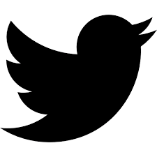

Nelly KAWERA
Junior Full-Stack Developer
SUMMARY
I am a technology enthusiast with communication and
skills, self driven, result-oriented,and
beleiving
in teamwork.I am looking for
social and economic development in Africa throung
engineering
methods in telecommunication and Software development.
EDUCATION
- AZUBI AFRICA- AWS Claud Practioner- Certificate
- University of Rwanda(UR)- Electronics and telecommunication- A0
- LYCEE DE KIGALI- Math, Physics and Chemistry- A2
June- September 2022
2015-2019
2012-2014
LANGUAGES
- English: Excelent
- French: good
- Swahili: good
- Kinyarwanda: Mother tongue
REFERENCES
- Paul Solomon, Azubi Africa
- Francis Ndamutsa, MTN-Rwanda
- Venuste Twagiramungu, TRES
kaweranelly@gmail.com

kaweranelly@gmail.com

https://github.com/nellykawera

kaweranelly@gmail.com
EXPERIENCE
Andela: Junior Software Developer
November 2022- Current
B-ONLINE: Software Developer
December 2022- Current
ITEME SDA: Front-End Developer
January-December 2022
TRES Ltd: Telecommunication Engineer
January 2018-December 2021
TRAINING AND CERTIFICATION
- AWS Claud Practitioner, by AWS
- Machine Learning, by Exponent Africa
- Cisco Certified Network Associate, by Cisco
- AWS Claud Practitioner, by AWS
SKILLS
- Toastmasters: Leadership & Communication
- Programming Languages: Java Script, Java,C/C++ & Python
- Data Science Frameworks: Scikit Learn, NumPy & Pandas